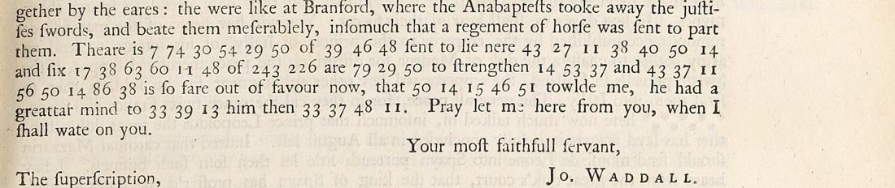

At a glanceNot solved · 0 of 50 groups
- The letter
- “Jo. Waddall”, London, 22 August 1656, to “monsieur Vanyeare, marchant, demeurant au logis de M. Robinson en Bruges”, where Charles II kept his court. Both names are probably covers. Intercepted by Thurloe’s office.
- Where
- The original is in the Bodleian, MS Rawlinson A vol. xli p. 642, not digitised. Printed by Thomas Birch, Thurloe State Papers (1742), vol. 5 p. 337.
- The cipher
- Eight words in figures 7–86 with homophones, and a two-group code word (243 226): 50 groups, 29 distinct, inside clear English.
- How it was tried
- Every royalist and Commonwealth key of 1653–60 on Cryptiana was applied and scored; cribs from the clear frame were tested.
- Still open
- All eight words. With fewer than two occurrences per symbol, every crib fits many keys equally well.
01 The letter
Waddall writes in a phonetic English about the elections to the second Protectorate Parliament: the City’s members (major-general Browne, aldermen Adams and Foot, Mr Jones), and a riot at Westminster between Colonel Grosvenor’s soldiers and Mr Latham’s party, “the solgers came in to cry for Gravenar, the setisans cried no sword men, no marsonary men”. Then the cipher, in a clear frame: “There is [6] of [3] sent to lie near [7] and six [6] of [243 226] are [3] to strengthen [3], and [8] is so far out of favour now, that [5] told me he had a greater mind to [3] him than [4]” (the bracketed numbers count the figures).

This letter was one of four short pieces with no known decipherment in Birch’s volumes that Cryptiana lists together. They share only the printed source and each is in its own cipher: Beverning and Vande Perre to Boreel, 1653, du Gard to White, 10 June 1656 and Brussels to Copinger, 12 August 1656 each have their own page.
02 What was tried
- Known keys. Every royalist and Commonwealth key of 1653–60 that Cryptiana publishes (Marshall 1656–58, Barwick–Hyde 1659–60, Stamford 1655, Butler 1656, the Charles II key intercepted in 1655, Kingston 1658, Westrope 1655, the Hague agent and Blake) was applied and scored with an English quadgram model. The Marshall key covers 48 of the 50 groups and gives “Theare is b s g n g m of i l m sent to lie nere k g c i k m d”: noise.
- Cribs. The frame invites guesses (“horse”, “hang”), but with 27 distinct letter figures in 50 groups and homophones, each guess fits many assignments equally well, and none forces the rest.
03 What remains
- The eight cipher words and the code pair 243 226 (50 groups): not read. Blocker: too short. The key would be among the ciphers of Charles II’s agents at Bruges in the Clarendon manuscripts, which are not online.
04 Sources
- Bodleian Library, MS Rawlinson A vol. xli p. 642.
- T. Birch (ed.), A Collection of the State Papers of John Thurloe (London 1742), vol. 5 p. 337: British History Online; page image in the Internet Archive scan.
- S. Tomokiyo, Cryptiana, Thurloe (the keys tried).
Ciphertext and notes: targets/waddall1656/; the key-trial script is in targets/thurloe/.